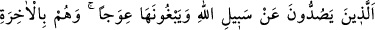
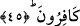
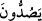

Şimdi uyanma anı ey uykucu!
Ölüm gelince uykunun sana ne faydası olacak?
Cezadan önce afv kapısını çal
Yoksa sopanın altında bağırmanın faydası yok
“Aralarından bir çağrıcı” Allah Teâlâ tarafından görevlendirilmiş bir melek -ki o
meleğin sûrun sâhibi İsrafil (a.s.) olduğu söylenmiştir-, cennet ve cehennem ehlinden
herkesin duyacağı tarzda “Allah’ın laneti zalimlerin üzerine olsun!” diye bağırır.”
Buradaki zalimlerden maksat kâfirlerdir. Mü’minlerden zulmedenler buna dahil
değildir. Çünkü zulüm mutlak olarak zikredildiği zaman kemâle hamledilir. Zulmün
kemâli ise şirktir.
Meleğin, Allah’ın lanetinin, onlar üzerine olduğunu söylemesi, bir bedduâ değil, olan
bir şeyi haber vermektir. Bunun bir lanet okuma olduğu da söylenmiştir.
45. Onlar, Allah yolundan alıkoyan ve onu eğip bükmek isteyen zalimlerdir. Onlar
ahireti de inkâr edenlerdir.
“Onlar, Allah’ın yolundan” Allah’ın cennetine ulaştıran yolu olan dininden “yüz
çevirirler” “
” fiilini, “insanları men ederler” mânâsında almak, bir mef’ûl
takdîrine ihtiyaç gösterir ki zaruret olmadıkça buna gerek yoktur. “ve onu eğriltmek
isterler,” Yani, hakdan uzak ve eğri olmakla vasfederek Allah’ın dinini kötülemek
isterlerdi. “onlar ahireti” yani öldükten sonra dirilmeyi “de inkar ederlerdi.”
Ayette zikri geçen “zalimler” kelimesi, “kâfirler” mânâsında olunca, daha sonra
zikredilen sıfatlar onun te’kidi kabîlinden olmuştur. Çünkü bu ayette zâlim, kâfirlere
mahsus üç sıfatla vasıflandırılmıştır:
1- Allah’ın dininden yüz çeviren kimseler olmaları.
2- Allah’ın hak dinini ve yolunu eğriltmek isteyip doğruluğu hakkındaki delilleri şek
ve şüphe ile karıştırarak bâtılla değiştirmeye çalışmaları.
3- Ahireti inkar etmeleri.
Bu üç vasıftan her biri, onların zulümlerinin küfür mânâsında olduğunu ortaya
koymaktadır.
Ayetlerin işârî yorumu şöyledir: “Cennet ehli” yani muhabbet ehli, “cehennem
ehline” yani ayrılık ateşinde kalanlara “şöyle seslenir: Biz Rabb’imizin” “Dikkat
ediniz! “Beni talep eden beni bulur.”[38] buyurarak “bize va’dettiğini gerçek bulduk.
Siz de Rabb’inizin” “Benden başkasını talep eden beni bulamaz.”[39] buyurarak
“va’dettiğini gerçek buldunuz mu? derler.” Onlar da: “Evet.” derler.” Onu gerçek